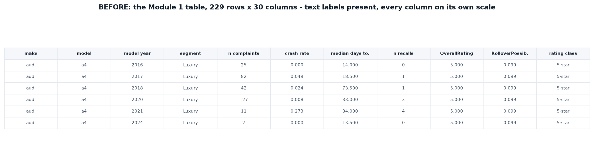
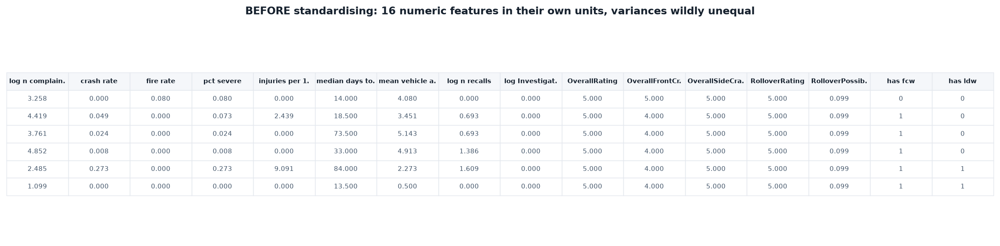

Principal Component Analysis
Sixteen separate safety measures describe each vehicle. The question here is whether they are really sixteen different things, or a handful of underlying patterns wearing sixteen names.
Overview
Principal Component Analysis takes a set of correlated measurements and rebuilds them as a new set of axes that are uncorrelated with one another and ordered by how much of the data's variation each one carries. The first principal component is the single direction through the data along which the points are most spread out. The second is the direction of greatest remaining spread that is perpendicular to the first, and so on. Each component is a weighted blend of all the original variables, with the weights, called loadings, saying how much each original measure contributes. Nothing is thrown away in the rotation itself. The reduction happens afterwards, when the later components, which carry little variation, are discarded.
Eigenvalues and eigenvectors sit underneath all of this. For the correlation matrix of the standardised data, an eigenvector is a direction that the matrix stretches without rotating, and its eigenvalue is how much stretching occurs. Translated into data terms, the eigenvectors are the candidate axes and the eigenvalues are the variance captured along each. Sorting the eigenvectors by their eigenvalues produces the principal components in order of importance, which is the whole mechanism. Because the input was standardised, each original variable contributes exactly 1 unit of variance, so an eigenvalue above 1 marks a component carrying more information than any single original measure did on its own.

Dimensionality reduction matters for three practical reasons. Visual inspection is limited to two or three dimensions, so a sixteen-dimensional dataset cannot be looked at directly without some projection. Many algorithms degrade as dimensions grow, because in high-dimensional space the distance to the nearest point and the distance to the furthest point converge, so "nearest" stops carrying much meaning, and distance-based methods such as the clustering in the previous section rest entirely on that meaning. And the data required to cover a space grows exponentially with its dimension, so a sample that comfortably describes two variables is sparse across sixteen. Correlated variables also make models unstable, since the model cannot tell which of two measures that move together is responsible for an effect.

How PCA is used in this project. It is put to three jobs here. First, as a test of whether the sixteen safety measures are really sixteen separate things: if a few components captured most of the variance, that would mean a small number of hidden factors drive vehicle safety, and a single summary score could in principle represent them. Second, as a way of seeing where the laboratory measurements sit relative to the ownership record. Because every component is a blend of all sixteen variables, the loadings show directly whether star ratings and realised harm move together, move in opposition, or are unrelated, which is the central question this project asks. Third, as a drawing surface: the clustering in the previous section happened in sixteen dimensions and cannot be looked at, so projecting those clusters onto the first two components is what makes them visible, and whether they stay separated under that projection is evidence about whether they were real.
Data Prep
PCA needs the same input shape as clustering: a purely numeric matrix with no labels. The same 16 features and the same 229 vehicles are used, prepared identically, so that the two sections are directly comparable. Standardisation is even more important here than it was for clustering. PCA finds directions of maximum variance, and variance depends on units, so an unstandardised variable with a wide numeric range would capture the first component purely by being measured on a larger scale. Standardising every column to mean 0 and standard deviation 1 means the analysis runs on the correlation matrix rather than the covariance matrix, and every variable gets an equal vote.



Data and code. PCA input: pca_sample.csv · Eigenvalues: pca_eigenvalues.csv · Loadings: pca_components.csv · Vehicle scores: pca_scores.csv
Code: pca_analysis.py
(full script) ·
pca.ipynb
(annotated notebook with outputs) — Python, using
sklearn.decomposition.PCA with StandardScaler.
Code
The analysis is in pca_analysis.py.
StandardScaler centres and scales the matrix, then
sklearn.decomposition.PCA is fitted with all components retained so
the full eigenvalue spectrum is available for the scree plot. Eigenvalues are
read from explained_variance_ and the eigenvectors from
components_. The correlation circle multiplies each loading by the
square root of its eigenvalue, which converts loadings into correlations between
the original variable and the component and is what bounds every arrow inside
the unit circle.
Results
How much structure is there?


| Measure | Result | Reading |
|---|---|---|
| Variance in PC1 | 24.2% | No single dominant pattern |
| Variance in PC1 + PC2 | 39.0% | A two-dimensional plot shows well under half the picture |
| Eigenvalues above 1 | 6 | Six components beat a single original variable |
| Components for 90% variance | 9 of 16 | Only a 44% reduction in dimensions |
| Components for 95% variance | 12 of 16 | Compression is poor |
What the components mean


Reading the two leading components:
- PC1 (24.2%) separates an older, high-volume, unassisted fleet from a newer, assisted one with a higher per-complaint harm rate. Complaint volume (−0.36), vehicle age (−0.33) and recalls (−0.23) load negatively, while crash rate (+0.37), severe share (+0.37) and the two driver-assistance indicators (+0.34, +0.33) load positively. It is essentially an age-and-exposure axis.
- PC2 (14.8%) sets laboratory ratings directly against real-world harm. Overall stars (−0.33), front-crash stars (−0.32) and rollover stars (−0.32) oppose severe share (+0.35), injuries per 100 (+0.34) and crash rate (+0.30). This component is the central question of the whole project rendered as a single axis.

Conclusions
The most useful result here is a negative one, and it goes to the heart of what this project is asking. If vehicle safety were driven by a few underlying qualities — some general notion of how well a car is built, say — then the sixteen things measured here would mostly be different views of those few qualities, and it would be possible to boil them down to two or three numbers without losing much. That is not what happens. It takes nine of the sixteen measures to preserve most of what makes one vehicle differ from another. In plain terms, these really are sixteen separate things to know about a car, and knowing some of them tells you remarkably little about the rest. That is the clearest argument this project can offer for why a single safety score, however carefully earned, leaves so much unsaid.
The second finding is sharper. When the measures are arranged by how they vary together, crash-test performance and real-world harm land on opposite sides of the same divide. They are not simply unrelated. Along the strongest dimension on which both appear, they pull against each other: the vehicles scoring best in the laboratory are not the ones whose owners report the fewest serious problems, and in this collection they tend to be different vehicles altogether. Module 1 noticed this as a weak correlation between star rating and complaint measures. Seen this way it is not a weak signal at all, but a clear separation between two kinds of safety that happen to share a name.
A third point concerns how much of this a picture can honestly show. Any two-dimensional chart of this data, including the ones on this page, is displaying well under half of what is actually there. That is worth stating plainly rather than hiding, because it sets a limit on how far any visual argument about vehicle safety can be pushed. The patterns visible in these charts are real, but they are a summary of a far messier reality, and a confident-looking plot is not the same thing as a complete one.
Taken together with the clustering, the message for a car buyer is consistent. There is no hidden single number that captures how safe a vehicle is, no shortcut that collapses the question into one score, and good performance in one respect carries no promise of good performance in another. A vehicle can be excellent at protecting people during a collision and still be among the more troublesome to own, and those two facts sit in different records that nobody is currently required to read side by side.